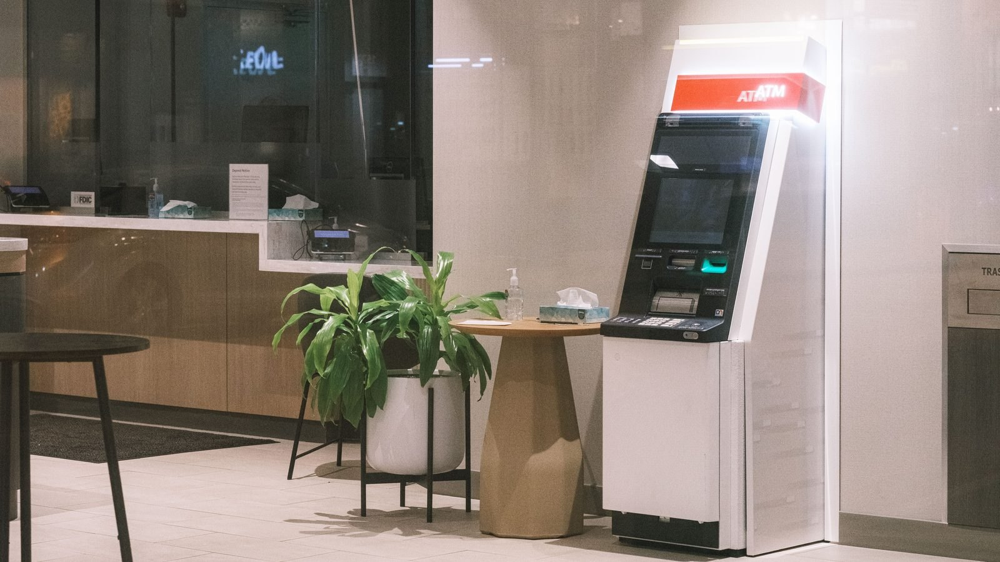

Inflação cai pelo quarto mês seguido, o tomate desaba 29% e a energia elétrica puxa para o outro lado
O índice que serve de base para o pedido de aumento real da categoria.
O Comando Nacional dos Bancários confirmou a paralisação em todo o país, no meio da campanha salarial de 2026. A categoria pede 5% de aumento real e ainda não recebeu proposta dos bancos.
Em 30 segundos · Modo de Leitura, formato original Santa Informa
Bancários de todo o país fazem paralisação de 24 horas nesta quinta-feira (20). Foi aprovada em assembleias na segunda-feira (17) e confirmada pelo Comando Nacional dos Bancários.
A categoria pede 5% de aumento real, acima da inflação, além de reajuste no piso, no vale-refeição, no vale-alimentação e na participação nos lucros.
A parada não fecha automaticamente todas as agências. Depende da adesão em cada região. A orientação ao correntista é resolver pelo aplicativo e pelo internet banking.
A pauta foi entregue à Fenaban em 24 de junho e as negociações começaram em 2 de julho. Até agora, segundo os bancários, não veio proposta para os itens econômicos.
EconomiaPublicada em Redação Santa Informa

Bancários de todo o Brasil fazem uma paralisação de 24 horas nesta quinta-feira, 20 de agosto. A decisão foi aprovada em assembleias na segunda-feira, 17, e confirmada pelo Comando Nacional dos Bancários. É mais uma etapa da campanha salarial de 2026, que se aproxima da data-base da categoria.
A lista de reivindicações tem cinco pontos: 5% de aumento real nos salários e demais verbas, quer dizer, acima da inflação; aumento do piso salarial; reajuste do vale-refeição; aumento do vale-alimentação; e valorização da participação nos lucros e resultados, a PLR.
A pauta foi entregue à Federação Nacional dos Bancos, a Fenaban, em 24 de junho. As negociações começaram em 2 de julho. Segundo o Comando Nacional dos Bancários, até agora não foi apresentada proposta para as reivindicações econômicas.
A Fenaban e a Federação Brasileira de Bancos, a Febraban, informaram que receberam a pauta em 24 de junho e que o calendário de negociações segue dentro do cronograma combinado. Ou seja, as duas partes concordam sobre as datas e discordam sobre o ritmo.
Aqui está a parte prática. A paralisação de 24 horas não significa fechamento automático de todas as agências. A adesão depende da participação dos trabalhadores e das atividades organizadas pelos sindicatos em cada região. Quer dizer: pode ser que a agência do seu bairro abra normalmente, pode ser que não.
A orientação aos correntistas é resolver o que der pelo aplicativo e pelo internet banking. Quem trabalha em regime de home office foi orientado a não acessar os sistemas dos bancos nem registrar ponto durante o período.
Agosto é mês de baixa temporada em Itapema e na Costa Esmeralda, e é justamente quando o comerciante acerta a papelada que não dá tempo de resolver em janeiro. Renegociação de crédito, abertura de conta de empresa, entrega de documento em envelope físico e saque em espécie ainda dependem de guichê. Quem tem coisa desse tipo marcada para hoje faz bem em ligar antes de sair de casa.
Este ano a taxa básica de juros já caiu para 14% ao ano e a inflação cedeu pelo quarto mês seguido. É esse pano de fundo que a categoria usa para pedir ganho acima da inflação, e é o mesmo que os bancos vão levar para a mesa.
O resumo de 30 segundos está no topo e a versão completa é o texto acima. Aqui ficam as três leituras da casa sobre o mesmo assunto.
Clara, a otimista
A boa notícia é que hoje quase tudo se resolve pelo celular. Pix, boleto, transferência, extrato, cartão bloqueado. O que há dez anos exigia fila de meia hora agora sai em três toques na tela.
E parada de um dia, avisada na véspera, é bem diferente de greve longa. Dá para reorganizar a manhã, adiantar o que é digital e deixar o guichê para amanhã. Ninguém precisa perder o dia por causa disso.
Seu Prudêncio, o criterioso
Merece atenção a falta de informação local. A convocação é nacional, mas quem decide se a agência de Itapema abre é o sindicato da base. Sem aviso na porta e sem comunicado do banco, o correntista descobre no lugar, depois de estacionar.
Vale acompanhar também quem não tem aplicativo. Boa parte dos idosos e dos microempreendedores da região ainda resolve no balcão, com envelope e comprovante na mão. Orientação de usar o internet banking funciona para quem já usa. Uma sugestão útil: os bancos publicarem a lista de agências afetadas na véspera, e não no dia.
Feita a ressalva, o processo está dentro do rito. A pauta foi entregue em junho, a negociação começou em julho e as duas partes confirmam o cronograma. Campanha salarial com calendário público e paralisação avisada com antecedência é o jeito civilizado de fazer isso, e o cliente sente bem menos do que sentiria numa greve de surpresa.
Caco, o sarcástico
O banco pede para você resolver tudo pelo aplicativo. Ele já pedia isso ontem, e vai pedir de novo amanhã. A paralisação só deu um motivo oficial.
O aviso é maravilhoso: a agência pode abrir ou pode não abrir. Obrigado, agora está tudo claro. Vou levar guarda-chuva e protetor solar.
E olha a ironia. A categoria pede aumento acima da inflação no ano em que a inflação finalmente caiu. Se tivesse pedido no ano passado, ainda estaria explicando a conta.
Fontes: Agência Brasil, reportagem de Wellton Máximo publicada em 19 de agosto de 2026.
O índice que serve de base para o pedido de aumento real da categoria.
O juro que move o resultado dos bancos e o bolso de quem financia.
Outro dinheiro que depende de banco e de calendário oficial.